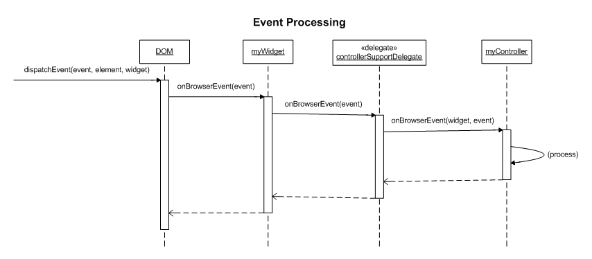

GWT Tk Controller Design
Introduction
I've been exploring a different way to handle events in GWT. In a nutshell, the design combines traits of Swing event handling and classic MVC controllers.
This all began when I encountered the following problems:
- different platforms require different event handling
- event handlers need access to event objects (e.g. for preventDefault() & stopPropagation())
Analysis
Browser specific event handling
In GWT, the basic recipe for accommodating browser differences is to delegate variations in code to "impl" classes. When you need to handle variations in behavior you can delegate events to the impl classes. If you have two widgets that require the same event handling you can create a class encapsulating the behavior and delegate events to it from the impl classes, e.g. Widget.onBrowserEvent() -> WidgetImplMozilla.doEvent() -> BehaviorImplMozilla.doEvent(). After coding this delegation pattern several times will want to add delegation support to a base class to limit code duplication.
DOM event object access
GWT event interfaces do not provide access to the event objects. I am unsure whether this was a design goal, or just a side-effect of keeping the design simple. Some classes (e.g. TextBoxBase) provide methods to act on the current event to address anticipated needs (e.g. cancelKey(), setKey()). However, GWT does not meet all the needs of users (e.g. canceling a "Tab" keypress on a button).
Approaches to access event objects:
- Modify the source for listener collections and listener interfaces
to expose the events.
Requires continual maintenance as GWT is released.
Limits reuse in the GWT community. - Subclass the widget and move listener code into onBrowserEvent().
Results in a proliferation of classes. - Create duplicate listener interfaces which expose the event object;
subclass widgets as needed to add extended event listener support.
Results in a proliferation of classes.
If you need to handle additional event types on a 3rd party widget that employs this approach you have to subclass again or modify the source. - Create a generic event listener facility which exposes the event object and notifies for all event types. Rather than create a listener interface with a method for every possible event, you can declare a generic onBrowserEvent() handler. The widget class can ask the listener which events it is interested in and only notify for those events. Switching on the event type in the listener.onBrowserEvent() method can be lessened by creating a separate listener for each event type.
Design
This design combines traits of Swing event handling and classic MVC controllers.
Class responsibilities
Widget
- provides a public interface for view state (e.g. isOpen(), isShowing())
- creates and maintains HTML structure
- handles browser structural differences by delegating to a view implementation class instantiated via GWT.create()
- supports listeners for high level events (e.g. PopupListener, TableListener)
Controller
- responds to DOM events, cancels events
- coordinates with other widgets
- installs hooks for browser-specific events (e.g. onselectstart)
- encapsulates browser behavioral differences (controller implementation is instantiated via GWT.create())
- tracks state of input operations (e.g. mouse state for drag operation)
- modifies data model
Structural overview (click to
zoom)

Design features and details
- Behavior can be tailored to each platform by instantiating controllers via deferred binding (GWT.create(Class))
- Multiple controllers for each widget. Logic can be separated into minimal, reusable classes.
- Controllers can be added and removed after the widget is constructed
- Subclasses can override controller creation via a factory method. This avoids unnecessary instantiation if a special implementation needed.
- A single controller can respond to multiple events and maintain state (e.g. drag operation)
- Stateless controllers may be shared between widgets
- Controller life cycle: Controller.plugIn() called via Widget.attach(), Controller.unplug() called via Widget.detach()
- Controllers can add platform-specific event hooks via plugIn()/unplug() (e.g. IE6 onselectstart)
- Controllers can be added/removed after Widget is attached (plugIn()/unplug() will be called)
Static structure (click to
zoom)

Controller instantiation (click
to zoom)

Controller activation (click
to zoom)

Event processing (click to
zoom)

{kind=link}
Consequences
- As with Swing listeners, controller notification order is not necessarily determinate
- Composite widgets (e.g. DialogBox) have to decide whether to expose subwidgets for configuration (e.g. getCaptionWidget()) or add controller accessor methods (e.g. setCaptionControllers()) to the interface.
- Deferred binding support necessitates default constructor; controllers are initialized via plugIn()
- A controller can cause the widget to be detached from the DOM, which unplugs the controller mid-operation (e.g. DialogBox.hide()). Controllers can work around this by detaching the widget via DeferredCommand.
- Widgets which wish to mix controllers and conventional event listeners must do additional bookkeeping to ensure events are properly sunk. This can be done in a base class or delegated to a helper class.
- Widget properties on which controllers are dependent must be made part of the widget interface. Controllers defined as nested member classes can access private properties, but this practice limits 3rd party reuse and configuration.
- Widget configurability can be improved by breaking down behavior into separate controllers. However, this strategy may result in unacceptable memory impact if applied to widgets which are used frequently (such as inputs or labels). Memory impact can be limited by sharing stateless controllers.
Legacy event support (click to
zoom)

Looking Forward
Controller injection
It may be possible to write a custom generator which parses annotations in the class doc and injects a controller into the generated class. Widgets would be instantiated via GWT.create(). Controllers typically have a default constructor.
Legacy listener implementations could also be injected this way. The listener interface would be inherited, but not implemented (the class would be abstract).